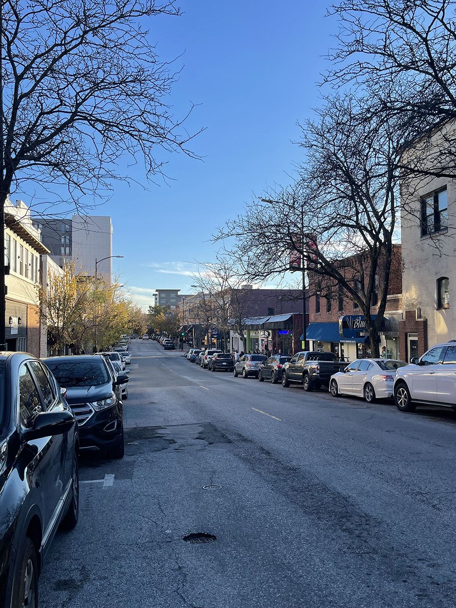

Downtown Columbia in Missouri is one of the most beautiful cities in the Fall. Leaves change color and fall, flowers are dormant, people huddle in their coats drinking coffee, and animals come out in search of food. These symbolize the start of the Fall season and is a beautiful time of the year to see a vibrant display of colors in nature, cheeks turning red from the cold, and the crunch of leaves below your feet.
Orange and green leaves on a tree are blowing, signifiying the Fall season.The brown leaves that have fallen to the ground show that the Fall season is here and the cold weather is causing the leaves to change color.We can see the themes of nature, beauty, and autumn in here. This is Peace Park, a park that is very close to the Mizzou campus and the feeling of the park gives autumn vibes with the trees changing color to orange and most have fallen on the grass. The sky is a crisp, cold blue, showing the weather becoming more colder but not yet of freezing temperatures. .This is a photo of a type of species of a flowering plant that is part of Mizzou’s garden and is called glossy abelia. It blooms from spring to fall and turns more reddish-bronze during the cold seasons like in this photo.Squirrels are a symbol of fall as they start to come out to look for food for winter.YellowDog Bookshop in Downtown Columbia puts up Halloween decorations, having entered the fall season.

The trees filled with either colored leaves or none mixed with the blue sky and the gray roads that have cleared up from the rain give off what a peaceful Fall looks like in Downtown Columbia. People are huddled outside showing that the weather is not that cold enough but are still wearing warmer weather clothing to protect against the cold.